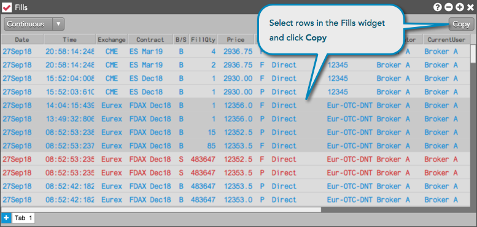

Use the Copy button in the Fills widget to copy selected fills and paste them into another application. The differences between copying fills instead of exporting them are:
To copy fills, select one of more rows in the grid using a mouse drag or Ctrl+left-click on each fill and click Copy. You can then paste the selected fills in the application of your choice (e.g., email).
